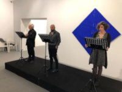

Partecipato appuntamento, al museo di via Turco, con la rassegna Poiesis ieri dedicata all'autore siciliano che più di tutti ha saputo interpretare e parlare del fenomeno Mafia.Metti una domenica pomeriggio, metti uno dei tanti contenitori culturali della città,
come il Marca, utilizzato in maniera polivalente, metti un professore in pensione, come Gigi La Rosa, di quel glorioso Liceo Classico Galluppi che tante belle menti ha regalato alla società, metti la passione di un’associazione come Teatro di Calabria, guidata da Anna Melania Corrado e animata da Mariarita Albanese, Salvatore Venuto e Aldo Conforto, che tenacemente mantiene viva la memoria di quella cultura classica per non disperdere le radici e diffondere il seme della cultura, sperando che attecchisca, metti oltre cento persone che altrettanto caparbiamente decidono che questi appuntamenti meritino pubblico e attenzione. Metti tutte queste cose insieme ed ecco che il trentennale dalla morte di Leonardo Sciascia, diventa il pretesto non solo per ricordare un autore meridionale attraverso la lettura dei suoi scritti, ma anche il modo per creare una socializzazione che parte dal basso ed allena quella democrazia della cultura e del sapere che spesso viene sacrificata sull'altare di manifestazioni ed eventi assolutamente e solamente commerciali. Il giorno della Civetta, Toto Modo e Il contesto, sono le tre opere di Sciascia scelte per l’appuntamento di Poiesis, dai quali sono stati tratti i brani più significativi letti ieri pomeriggio durante il reading e che hanno contestualizzato Leonardo Sciascia come l’autore siciliano forse più moderno e coraggioso degli ultimi anni. Leonardo Sciascia ha scritto contro la mafia restando sempre nella sua Sicilia, Leonardo Sciascia ha tracciato la via per ‘indebolire’ la mafia che 25 anni dopo Giovanni Falcone avrebbe seguito, o meglio avrebbe voluto seguire se l’attentato non fosse arrivato prima, e cioè aggredire patrimonialmente i delinquenti, entrare nelle banche fermare l’accumulo di patrimoni. Leonardo Sciascia è stato il primo a parlare di “uomini, mezzi uomini, ominicchi e quaraquà” ben sapendo quanto sia labile il confine tra queste figure in una terra in cui la parola rispetto non ha lo stesso significato che altrove.
Amico di Indro Montanelli, subì ovviamente l’influenza di Pirandello, disse di no a Sergio Leone che gli propose di sceneggiare un suo testo, fu scrittore d’inchiesta vero, siciliano fino al midollo al punto da amare la sua terra così come arrivare ad odiarla per lo stesso motivo.
Sciascia è forse l’ultimo degli scrittori italiani i cui libri possono essere definiti “narrativa”.
Molti di coloro i quali si sono formati avendo la fortuna di avere dei buoni maestri, sugli scritti di Sciascia, hanno maturato la convinzione di saper distinguere davvero cosa è un impegno
civile essendo testimoni del proprio tempo.
C’è poi in Sciascia la straordinaria capacità di lettura del fenomeno mafioso in una terra che negli anni Sessanta ne negava ancora l’esistenza e l’intuizione del salto di qualità che stava
compiendo nel passaggio dalla campagna alla città. Anticipo di quella «mafia imprenditrice» che è la forma più corrosiva assunta da Cosa Nostra.
C’è infine il rigore della narrazione, la cura dei dettagli, i dialoghi e le ambientazioni che sono vere e proprie sceneggiature.
Ma quando ci si illude di aver in mano quello che serve per decifrare la Sicilia si scopre, forse, la più lacerante delle lezioni lasciate da Sciascia.
In Sicilia c’è una sola arma che ti permette veramente di inchiodare i colpevoli e di rendere giustizia alle vittime.
E non è la cronaca, l’inchiesta o l’indagine sul campo, ma il romanzo e la costruzione apparentemente di fantasia.
Solo la finzione letteraria restituisce verità palesi che invece evaporano quando si pensa di averle afferrate. Metti tutte queste cose insieme e ti accorgi che Catanzaro c'è, reagisce ai giusti stimoli e una domenica pomeriggio
qualunque ti restituisce l'immagine di quella città in cui è possibile ancora credere e avere ancora più di una speranza.
Si ringraziano Giulia Zampina e la redazione di CATANZAROINFORMA.IT
Sciascia Marca TdC ecco come si allena la democrazia culturale
articolo dell'appuntamento al museo di via Turco con la rassegna Poiesis dedicata all'autore siciliano Leonardo Sciascia del "Teatro di Calabria Aroldo Tieri" pubblicato nell'anno 2019
Aldo Conforto Amico di Indro Montanelli, subì ovviamente l’influenza di Pirandello
Aldo Conforto fortuna di avere dei buoni maestri, sugli scritti di Sciascia
Aldo Conforto Metti tutte queste cose insieme e ti accorgi che Catanzaro c'è
come il Marca, utilizzato in maniera polivalente

Riccardo Conforto
https://aldoconforto.github.io/teatro/riccardo-conforto-design-e-gestione-del-sito
{kind=link}